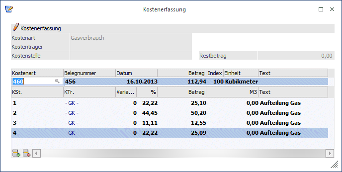
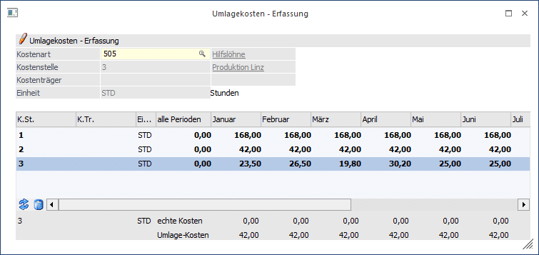
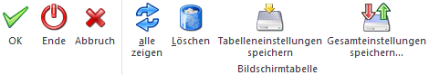

In welchem Verhältnis Kostenstellenumlagen auf empfangende Kostenstellen durchgeführt werden, wird immer durch Verhältniszahlen bestimmt. Diese Verhältniszahlen können sich nun aufgrund von fixen statistischen Größen (z.B. m² der Räume für die Heizkosten), variablen statistischen Größen (Anzahl Mitarbeiter, gefahrene Kilometer, geleistete Stunden, etc.), oder auch aufgrund von gebuchten Kosten bzw. Erlösen ergeben.
Beispiel 1
Die Kosten des Fuhrparks sollen aufgrund der für die einzelnen Kostenstellen gefahrenen Kilometer umgelegt werden (oder auf Basis des Benzinverbrauchs, usw.).
Beispiel 2
Die Kosten der Werksküche sollen nach der Anzahl der auf den Kostenstellen beschäftigten Mitarbeiter umgelegt werden.
Gebuchte Kosten/Erlöse (Benzinkosten, Leistungslöhne, geleistete Stunden) ergeben sich automatisch durch die Erfassung der IST-Kosten - und die Umlage muss sich dann nur noch aufgrund des jeweils hinterlegten Umlageverfahrens (z.B.: auf Basis der gebuchten Leistungslöhne, oder auf Basis der erwirtschafteten Erlöse pro Kostenstelle) das korrekte Umlageverhältnis für jede Periode errechnen.
Mit anderen Worten: Die Basis für die Errechnung des Verhältnisses, nach dem die Umlage gefahren werden soll, wird im System im Zuge der Erfassung der IST-Kosten eingebucht.
Soll nun aber z.B. die Anzahl der Mitarbeiter, die auf der Kostenstelle beschäftigt waren, als Basis für eine Umlageverhältnis-Errechnung (siehe Beispiel 2 - Umlage der Werksküche) herangezogen werden, dann wird diese Anzahl der Mitarbeiter genauso auf den einzelnen Kostenstellen (z.B. mit Hilfe einer Kostenart "Mitarbeiter", in der ganz einfach eine Einheit "Mitarbeiter" hinterlegt wird) eingebucht, wobei dies dann im Menüpunkt "Umlagekosten - Erfassung" vorgenommen wird.
Der wesentliche Vorteil dabei ist der, dass das Programm aufgrund der gebuchten Ziffern für jede Periode selbständig das korrekte Verhältnis für die Umlage errechnen kann - d.h. es kann ja durchaus sein, dass im Januar z.B. 10 Mitarbeiter auf der Kostenstelle 1 beschäftigt waren, im Februar 14 und im März 12. Wird nun die Anzahl der Mitarbeiter für jede Periode auf den einzelnen Kostenstellen eingebucht, kann das Programm im Zuge der Vorbereitung der Umlage selbständig und automatisch errechnen, wie die Verhältnisziffern für die Umlage der Kosten der Werksküche lauten müssen - und das für jede Periode mit den korrekten Ziffern.
Nur so kann auch gewährleistet werden, dass die Umlage im Nachhinein auch beliebig aufgerollt werden kann. Nehmen wir an, es wurde vergessen, einen Mitarbeiter im Monat Juni bis August zu berücksichtigen - dann wird einfach in den Perioden Juni bis August die Anzahl der Mitarbeiter entsprechend korrigiert (im Menüpunkt "Umlagekosten - Erfassung") - und schon kann die komplette Umlage der Perioden 6 bis 8 auf Knopfdruck aufgerollt werden. Das Programm kümmert sich selbständig um die Bereitstellung der neuen Verhältniszahlen für die Umlageverteilung - und ändert für die Monate Juni bis August entsprechend die Umlageverhältnisse (in den anderen Monaten bleibt DIESE Verhältniszahl ja unverändert)
Die Eingabe von Werten für die Berechnung von Verhältnisziffern kann nun auf 2 Arten erfolgen:
ü Einbuchen der Einheiten im "normalen" Kosten Erfassen
Gehen Sie dazu in den Menüpunkt
1 Kosten
1 Kosten-Erfassung
oder drücken Sie
1 STRG + E
und buchen Sie die entsprechenden Beträge (mit oder ohne Einheiten) einfach auf die einzelnen Kostenstellen. Dasselbe kann auch schon in der Buchungserfassung der Finanzbuchhaltung oder KORE stattfinden.

Die effizienteste Variante, um die Basis für die Umlagen periodenübergreifend einzubuchen ist, sie einfach in der Tabelle der Umlagekosten-Erfassung einzugeben.
Die Umlagekosten-Erfassung finden Sie unter
1 Kosten
1 Umlagekosten - Erfassung

Die Anzahl der Quadratmeter der Kostenstellen wird sich über die einzelnen Perioden kaum ändern, daher wird die Anzahl pro Kostenstelle ganz einfach in der Spalte "alle Perioden" eingegeben. Damit erzeugt das Programm Journalzeilen für alle Perioden im Wirtschaftsjahr, ohne dass die Werte pro Periode einzeln vorgeben werden müssen.
Die Anzahl der Mitarbeiter kann sich sehr wohl variabel gestalten - also ist in jeder Periode die zutreffende Anzahl pro Kostenstelle vorzugeben.
Verändert sich die Anzahl der Mitarbeiter im laufenden Jahr, können die Werte einfach in der Umlagekosten-Erfassung aufgerufen und geändert werden.
Bei OK werden die Zeilen im Journal aktualisiert - es wird also kein neuer Journaleintrag erzeugt.
Buttons

Ø OK
Mit dem Button OK werden die Eingaben gespeichert und die Umlageverhältnisse für das gesamte Wirtschaftsjahr im Journal in Form von Buchungszeilen gespeichert.
Ø Ende
Das Fenster wird geschlossen und nicht gespeicherte Änderungen verworfen.
Ø Abbruch
Nicht gespeicherte Änderungen werden verworfen, das Fenster bleibt zur Erfassung geöffnet.
Ø Alle zeigen
Hier werden alle Kostenarten angezeigt, bei den Umlagezahlen vorhanden sind.
Ø Löschen
Dieser Button löscht alle erfassten Umlagekosten der markierten Zeile.
Ø Tabelleneinstellungen speichern
Die Spalten einer Tabelle können grundsätzlich an beliebige Positionen verschoben, bzw. in der Breite entsprechend angepasst werden. Durch Anwahl des Buttons "Tabelleneinstellungen speichern" werden die Einstellungen benutzerspezifisch gespeichert und bei dem nächsten Aufruf des Programmpunktes wieder vorgeschlagen.
Ø Gesamteinstellungen speichern
Im Gegensatz zu "Tabelleneinstellungen speichern" können mit "Gesamteinstellungen speichern" mehrere Tabellenaufbauten gespeichert und nach Wunsch geladen werden. Zusätzlich werden Sonderfunktionen der Tabelle (z.B. "Spalte gruppieren") ebenfalls bei der Speicherung bedacht.
Hinweis 1
Sind auch echte Kosten vorhanden, so werden diese im Fußbereich dargestellt und bei erneutem Laden der Tabelle angezeigt. Um auch echte Kosten auf null zu setzen, werden die Spalten mit Wert 0 gefüllt und gespeichert.
Soll im Nachhinein etwas an den Einheiten geändert werden, wird die entsprechende Kostenart erneut aufgerufen und die vorgeschlagene Anzahl der Einheiten in der betreffenden Periode kann auf den gewünschten Wert geändert und gespeichert werden.
So können in diesem Menüpunkt sehr simpel und effizient alle für die Umlage relevanten Größen kontrolliert, vorgegeben und adaptiert werden.
Hinweis 2
Im Fuß der Erfassungsmaske wird gegenübergestellt, wie viele Einheiten der jeweils aktuellen Zeile tatsächlich in der Buchungserfassung eingegeben wurden - und wie viele Einheiten in diesem Erfassungspunkt eingegeben wurden.
Die Umlage-Kostenerfassung kann nur auf Kostenarten mit einer gültigen Einheit durchgeführt werden. Wird eine Kostenart ohne gültige Einheit ausgewählt, kommt der Hinweis: